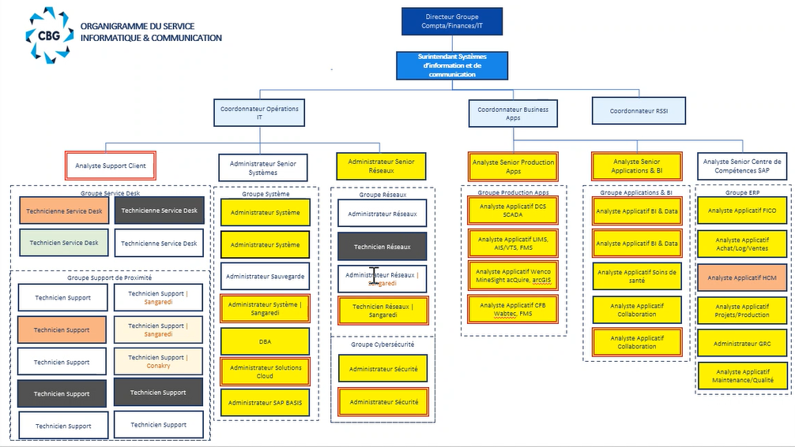

RAPPORT DE STAGE DE KABA MOHAMED ASBOUR DIAKITÉ - 2026
Ce document contient des informations relatives à mon stage au sein de la COMPAGNIE DES BAUXITES DE GUINEE (CBG).
Il est destiné uniquement à des fins d'évaluation académique.
Merci de ne pas le diffuser sans autorisation préalable.
📞 Tel: (+224) 626-73-26-82 / 611-57-12-58
📧 asbourkaba3657diakite@gmail.com
📧 asbourmohamed3657@outlook.fr
COVER PAGE - PAGE DE GARDE

TABLE OF CONTENT / TABLE DES MATIÈRES
INTRODUCTION
Ce stage s'inscrit dans le cadre de ma formation académique et représente une étape essentielle dans mon parcours professionnel. Il a été effectué au sein de la Compagnie des Bauxites de Guinée (CBG), plus précisément dans le département D4402 Informatique.
L'objectif principal de cette immersion était de découvrir le fonctionnement d'un environnement industriel complexe, d'acquérir des compétences techniques concrètes et de participer activement aux activités du département informatique.
Au cours de cette expérience, j'ai été impliqué dans plusieurs domaines clés tels que : les systèmes ERP (SAP), l'analyse et la gestion des données, le support technique, le développement d'applications (Power Apps, Django), et l'automatisation des processus (Power Automate).
Remerciements
Je tiens à exprimer ma profonde gratitude à la Compagnie des Bauxites de Guinée (CBG), et à sa Direction Générale son Excellence Monsieur Karifa Condé pour m'avoir offert l'opportunité d'effectuer mon stage au sein du département D4402 Informatique. Cette expérience représente une étape déterminante dans mon parcours académique et professionnel.
Je remercie particulièrement mes encadreurs professionnels, Bassoum Hamady (Surintendant Informatique), Monsieur Barry Thierno Mamoudou (Coordinateur Business Apps), Monsieur Diallo Mamadou Cellou (Analyste Senior Centre de Compétence SAP), Monsieur Sylla Hassane (Analyste Application & BI) pour leur accompagnement, leur disponibilité, leurs conseils techniques et la confiance qu'ils m'ont accordée tout au long de cette période.
Mes remerciements s'adressent également à l'ensemble des collaborateurs du département pour leur accueil, leur esprit d'équipe et leur volonté de partager leurs connaissances.
Enfin, je remercie mon établissement académique, Ahmadou Dieng et Business and Technology Institute (Ghana), ainsi que mes encadreurs académiques, Monsieur Alpha Oumar Leno, Mister Koffi et Mister George (CEO) pour leur suivi pédagogique et les orientations qui ont contribué à la réussite de ce stage.
Objectifs stratégiques du stage
Objectifs professionnels
Au-delà de la validation académique, ce stage représente pour moi une opportunité stratégique d'intégration progressive dans un environnement industriel exigeant.
Mon objectif est de devenir rapidement opérationnel et utile au département, en apportant une contribution concrète aux activités quotidiennes tout en assimilant efficacement les processus internes, les standards techniques et la culture organisationnelle de l'entreprise.
Je m'engage à : comprendre en profondeur les méthodes de travail et les flux opérationnels, développer une autonomie progressive dans l'exécution des tâches confiées, identifier les opportunités d'amélioration des processus, apporter une valeur ajoutée mesurable à travers la rigueur, la discipline et l'initiative.
Vision d'intégration et projection professionnelle
Ce stage constitue également une phase d'évaluation mutuelle : pour l'entreprise, mesurer mon potentiel d'adaptation et de contribution ; pour moi, confirmer mon alignement avec les exigences et la culture du secteur minier.
À travers cette immersion, je souhaite consolider mes compétences techniques, renforcer ma compréhension des enjeux industriels et m'inscrire durablement dans une trajectoire professionnelle cohérente avec les standards de performance de l'entreprise.
4. Présentation de l'entreprise
4.1 Aperçu général de la CBG
La Compagnie des Bauxites de Guinée (CBG) est un leader mondial dans l'industrie de la bauxite. Elle exploite des mines situées dans la localité de Sangarédi au nord-ouest de la République de Guinée et produit plus de 16 millions de tonnes de bauxite de qualité supérieure par an.
Ses actions sont détenues à 49% par l'État guinéen et à 51% par Halco Mining, un consortium international. Depuis 1973, la CBG a contribué à plus de 5 milliards de dollars aux revenus de l'État guinéen et investi près d'un milliard de dollars dans la modernisation de ses actifs depuis 2016.
4.2 Secteur d'activité
La CBG opère dans le secteur minier, spécialisé dans l'extraction et l'exportation de bauxite vers l'Amérique du Nord, l'Europe et la Chine.
4.3 Rôle du département informatique
Le département informatique de la CBG est un pilier central garantissant la disponibilité, la performance et la sécurité des systèmes informatiques qui soutiennent l'ensemble des activités de la société.
4.4 Structure organisationnelle
La CBG dispose de trois sièges : siège social à Kamsar, siège opérationnel à Sangarédi et siège international à Wilmington, Delaware (USA). Le département informatique (D4402) intervient en appui transversal aux services techniques, administratifs et logistiques.
Organigramme du D4402


5. Description du département informatique D4402
5.1 Objectifs du département
Le département D4402 Informatique vise à garantir la continuité des opérations critiques en assurant la disponibilité et la sécurité des systèmes d'information.
5.2 Infrastructure informatique
L'infrastructure comprend : systèmes ERP (SAP), serveurs AS400, outils analytiques (Power BI, Power Apps, SharePoint), réseaux et cybersécurité (Datto, Genetec Omnicast).
5.3 Responsabilités principales
Support utilisateur, gestion des données, développement et digitalisation, administration système, sécurité et conformité.
5.1 Première semaine d'immersion
Induction et sensibilisation institutionnelle
Ma première semaine a débuté par une phase d'intégration, orientée principalement vers la culture d'entreprise, la sécurité et les engagements environnementaux de la CBG.
Santé et sécurité au travail
Nous avons été formés sur les principes fondamentaux de santé et sécurité, les 12 règles d'or de la CBG, et les bonnes pratiques en environnement industriel.
Biodiversité et engagement environnemental
Une présentation détaillée a été faite sur l'importance de la biodiversité, le Biodiversity Action Plan de la CBG, l'engagement NNL/NG (No Net Loss/Net Gain), et les partenariats environnementaux.
Programme de sensibilisation aux serpents
Nous avons suivi une session sur les comportements à adopter face à un serpent, les procédures en cas de morsure, et les consignes de prévention en zone à risque.
5.2 Première immersion dans les départements techniques – 12/02/2026
Lors de notre première journée opérationnelle, nous avons été répartis dans différents pôles : SAP, Maintenance, Network Management System.
Nos missions consistaient à installer des ordinateurs, configurer les systèmes, et intégrer les postes au réseau interne de la CBG.
5.3 Organisation infrastructurelle
Au bureau de Monsieur Mohamed Kaba, nous avons participé à l'organisation des câbles, la gestion des switches, et l'inventaire du matériel informatique.
5.4 Encadrement professionnel
Monsieur N'Famoussa Osvaldo Camara nous a rappelé les règles de comportement professionnel : choisir le respect, prendre des notes systématiquement, et adopter une posture d'apprentissage permanent.
5.5 Immersion au département SAP – 13/02/2026
Nous avons été accueillis au bureau SAP par Monsieur Moud. J'ai appris l'usage de plusieurs transactions : LSMW, SUIM, SE16N, FBL5N.
5.6 Observation critique et apprentissage personnel
Lors d'une extraction de données avec Monsieur Sylla Hassane, je n'ai pas su répondre à la question sur la transaction SE16N, ce qui m'a permis d'identifier mes axes d'amélioration.
7. Difficultés rencontrées – Semaine 1
Un problème technique a été rencontré lors de l'installation réseau au département Hydrocarbures. L'ouverture murale destinée aux câbles était insuffisante.
10. Développement professionnel et personnel – Semaine 1
Cette première semaine m'a permis de comprendre l'importance de la culture sécurité, d'observer les flux de gestion des données en environnement ERP, d'identifier les opportunités d'optimisation des processus, et de développer une posture professionnelle plus rigoureuse.
5.7 Deuxième semaine : approfondissement SAP et projet digital de fiches de paie
5.7.1 Approfondissement des transactions SAP – 16/02/2026
Transactions étudiées : MB51, MB24, CSKS, MSEG, MS20, SU01.
5.7.2 Assistance utilisateur : transaction MIGO
Nous avons assisté un utilisateur confronté à un problème de confirmation d'entrée de marchandises via la transaction MIGO.
5.7.3 Mise en place d'un serveur Apache : projet fiches de paie
Nous avons participé à l'installation d'un serveur Apache pour la digitalisation des fiches de paie.
5.7.4 Création des comptes SAP et configuration
.png)
J'ai obtenu mes accès Windows et SAP durant cette semaine.
.png)
.png)
5.7.5 Choix du module SAP : orientation vers MM
.png)
J'ai choisi le module MM (Material Management). Transactions étudiées : MMBE, MB51, MD04.
5.7.6 Participation au développement du projet – 19/02/2026
Nous avons assisté Monsieur Sylla Hassane dans la configuration Laravel, l'installation MySQL, et la connexion base de données.
7. Difficultés rencontrées – Semaine 2
Difficulté de compréhension du processus de réservation (MB24), retard dans l'obtention du matériel, difficulté d'orientation module SAP.
8. Analyse critique – Semaine 2
.png)
SAP fonctionne comme un système interconnecté. Le projet de digitalisation des fiches de paie illustre une transformation digitale orientée.
10. Développement professionnel – Semaine 2
Cette semaine m'a permis de comprendre la logique des flux logistiques SAP et de développer une vision orientée processus.
5.8 Troisième semaine : coordination managériale, outils digitaux et gestion de données
5.8.1 Réunion hebdomadaire et management opérationnel – 23/02/2026
Chaque lundi, Monsieur Moud organise une réunion d'équipe centrée sur la sécurité, le suivi des projets, et la revue des tâches via Autotask/Datto.
5.8.2 Inventaire des applications utilisées sur le réseau – 24/02/2026
Nous avons réalisé un inventaire des applications utilisées au sein de la CBG. Résultat : plus de 2000 éléments recensés.
5.8.3 Assistance SAP : transaction IW21 – 25/02/2026
Nous avons assisté un utilisateur pour la création d'un avis via la transaction IW21.
5.8.4 Analyse et restructuration d'une application InfoPath – 26/02/2026
Nous avons analysé une application développée sous InfoPath pour la fiche de présence Santé-Sécurité.
5.8.5 Nettoyage d'un fichier logistique volumineux
Nous avons traité un fichier Excel de 87 000 lignes pour le nettoyage et la structuration des données.
5.8.6 Découverte d'outils innovants : Synthesia
Monsieur Moud nous a présenté Synthesia, un outil basé sur l'IA pour la création de vidéos assistées.
7. Difficultés rencontrées – Semaine 3
Problème de performance du poste lors du traitement de données volumineuses, difficulté de prise de contrôle à distance.
8. Analyse critique – Semaine 3
Leadership et gouvernance IT, limites d'Excel dans la gestion de données volumineuses, digitalisation et intelligence artificielle.
8. Compétences techniques acquises
- SAP : transactions MB51, MB24, MIGO, SE16N, SU01, MM (MMBE, MD04), SE38, IW21
- Power BI : création de tableaux de bord, modélisation de données
- Power Apps : développement d'application Laissez-Passer, intégration SharePoint
- Power Automate : automatisation des workflows, génération de documents
- AS400 / PUB400 : commandes système, gestion des fichiers
- Développement : PHP, Laravel, MySQL, Apache, Python/Django basics
12. Conclusion générale
Ce stage au sein de la CBG a constitué une expérience particulièrement enrichissante, tant sur le plan technique que professionnel. Il m'a permis de découvrir un environnement industriel exigeant, de comprendre le rôle stratégique des systèmes d'information et de participer à des projets concrets à forte valeur ajoutée.
13. Annexes
📁 DOCUMENTS ET RESSOURCES
Fin du rapport - Asbour Kaba Mohamed Diakité - 2026
GOD AS CEO AS ALWAYS
GO BEYOND PLUS ULTRA.